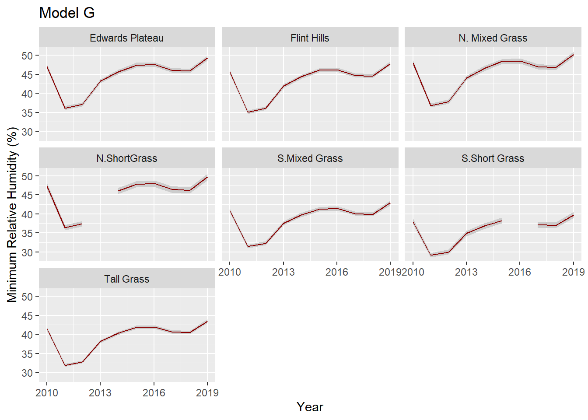
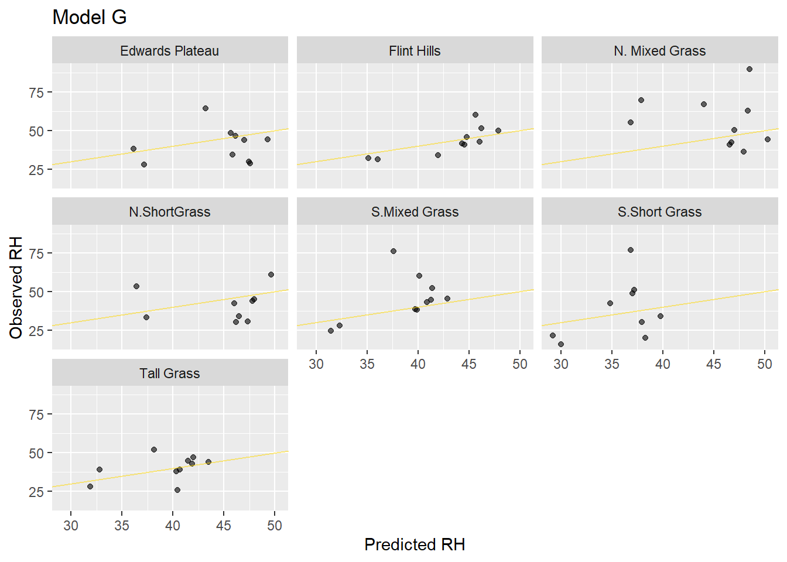
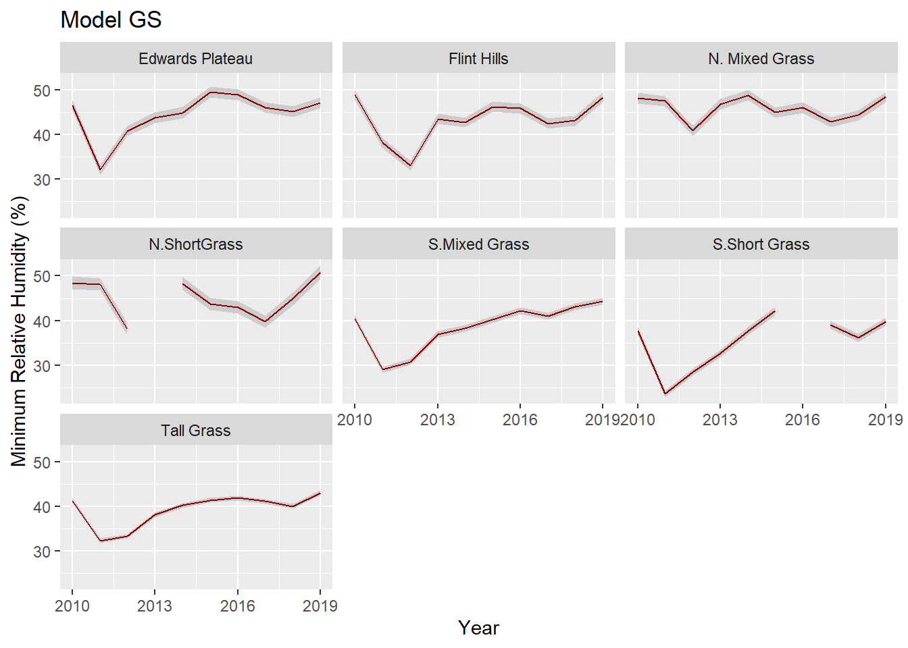

Hierarchical Generalized Additive Models
Assigned Reading:
- Pedersen, E. J., Miller, D. L., Simpson, G. L., & Ross, N. (2019). Hierarchical generalized additive models in ecology: an introduction with mgcv. PeerJ, 7, e6876.
- Lawton, D., Scarth, P., Deveson, E., Piou, C., Spessa, A., Waters, C., & Cease, A. J. (2022). Seeing the locust in the swarm: accounting for spatiotemporal hierarchy improves ecological models of insect populations. Ecography, 2022(2).
Overview
To learn about hierarchical generalized additive models (HGAMs), we are going to use weather station data from grassland ecoregions in the Great Plains, USA. We will be asking if two factors that affect fire intensity, minimum relative humidity and maximum wind speed, are changing between 2010 and 2019.

A brief description of the data:
- Year = years from 2010 - 2019
- Month = numeric code for months May - Sept
- Day = Julian day of year
- Veg_Type = rangeland ecoregion
- Lat = latitude
- Long = longitude
- Station_ID = weather station unique identifier code
- RH_per_min = minimum percent relative humidity between 0600 - 1800 per day
- Wind_mph_max = maximum wind speed (mph) between 0600 - 1800 per day
## package 'BH' successfully unpacked and MD5 sums checked
## package 'patchwork' successfully unpacked and MD5 sums checked
## package 'mvnfast' successfully unpacked and MD5 sums checked
## package 'ggokabeito' successfully unpacked and MD5 sums checked
## package 'gratia' successfully unpacked and MD5 sums checkedData Exploration
On your own, familiarize yourself with the data. Below, you can see that we’re deadling with >100k rows and many potential grouping variables.
## [1] 104712 9# How many unique values in each column?
weather %>%
summarize(across(everything(), ~ length(unique(.x))))## # A tibble: 1 × 9
## Year Veg_Type Station_ID Lat Long Month Day Wind_mph_max RH_per_min
## <int> <int> <int> <int> <int> <int> <int> <int> <int>
## 1 10 7 71 71 70 5 153 146 7156# Some preparations for mgcv
weather <-
weather %>%
mutate(across(c(Veg_Type, Station_ID),
as.factor)) %>% # mgcv wants factors for random effect
mutate(RH_per_min = RH_per_min + 0.001,
Wind_mph_max = Wind_mph_max + 0.001) %>% # for log link
mutate(across(c(Year, Day, Lat, Long),
~ (.x - mean(.x)) / sd(.x),
.names = "{.col}_scaled")) # scale covariates“Random Intercept”: Model G
Let’s first try the simplest HGAM: estimate a single global function for our covariate of interest (Year) plus a individual-level random effect intercept for ecoregion. On your own, investigate each model diagnostic call (commented out in the chunk below) and interpret. Look at the R help for more information, and ask Caleb if you have more questions.
# Create model G using bam()
rh_modG <-
bam(RH_per_min ~ s(Year) +
s(Day, bs = "cc") + # Note cubic regression spline
te(Long, Lat) + # tensor smooth lets latitude/longitude 'interact'
s(Veg_Type, bs = "re"), # Random effect for ecoregion
family = gaussian("log"), # Why this link?!
data = weather,
method = "fREML") # need to use fREML for fast fitting.
# # Some basic model diagnostics
# summary(rh_modG)
# gam.check(rh_modG)
# gratia::appraise(rh_modG)
# # Use gratia::draw to show effects
# gratia::draw(rh_modG)Okay, so the model isn’t the greatest for a few reasons (can you list some?). However, for fun–and so we can see how “random intercepts” work with HGAMs–let’s plot some predictions. We’ll also do a quick comparison of fitted vs. observed to gauge how well the models are performing.
# setup prediction data. This is a little tricky because for ggplot, we only
# want one latitude/longitude for each ecoregion AND we want to make sure the
# correct latitude/longitudes get paired with their respective ecoregions. Doing
# this with a left_join()
rh_pred_df <-
with(
weather,
left_join(
expand.grid(
Year = 2010:2019,
Day = median(Day), # Only using the median day here!
Veg_Type = unique(Veg_Type)
),
weather %>%
filter(Day == median(Day)) %>%
group_by(Veg_Type) %>%
filter(Station_ID %in% sample(Station_ID, 1, replace = FALSE)) %>%
select(c(Veg_Type, Lat, Long, Year, RH_per_min)),
keep = FALSE
)
)
# make the prediction, add this and a column of standard errors to the prediction
# data.frame. Predictions are on the log scale.
rh_modG_pred <- cbind(rh_pred_df,
predict(rh_modG,
rh_pred_df,
se.fit = TRUE,
type = "response"))
# make the prediction plots
ggplot(data = rh_modG_pred) +
facet_wrap(~ Veg_Type) +
geom_ribbon(aes(ymin = fit - 1.96 * se.fit,
ymax = fit + 1.96 * se.fit,
x = Year,
group = Veg_Type),
fill = "grey80") +
geom_line(aes(x = Year,
y = fit,
group = Veg_Type),
color = "darkred") +
scale_x_continuous(breaks = c(2010, 2013, 2016, 2019)) +
labs(x = "Year",
y = "Minimum Relative Humidity (%)") +
ggtitle("Model G")
# Now, let's create a data.frame comparing observed vs. fitted values
rh_modG_predVSobs <-
transform(rh_modG_pred,
modG = predict(rh_modG,
rh_modG_pred,
type = "response"))
# Plot observed vs. fitted values. This is a "quick" way to see how well
# the model predicted the data.
ggplot(rh_modG_predVSobs,
aes(x = modG,
y = RH_per_min)) +
facet_wrap(~ Veg_Type) +
geom_point(alpha = 0.6) +
geom_abline(color = "gold",
alpha = 0.5) +
labs(x="Predicted RH", y="Observed RH") +
ggtitle("Model G")
On your own, interpret these prediction plots. Remember the values we fed the predict() function when you’re interpreting. For instance, what does it mean that we only used the median Julian day in these predictions? Does it matter that we only used one randomly-selected weather station?
“Random Slope”: Model GS
Let’s try for a
# Create model GS using bam()
rh_modGS <-
bam(
RH_per_min ~ s(Year) +
s(Year, Veg_Type, bs = "fs", m = 2) +
s(Day, bs = "cc") +
te(Long, Lat),
family = gaussian("log"),
data = weather,
method = "fREML"
)
# # Some basic model diagnostics
# summary(rh_modGS)
# gam.check(rh_modGS)
# gratia::appraise(rh_modGS)
# # Use gratia::draw to show effects. This is slow, so commenting out
# gratia::draw(rh_modGS)On your own, run the model diagnostics and compare to diagnostics from Model G. Are there improvements, and if so, where do you see them? Should we consider increasing “k” for any of the smoothers?
To be thorough, let’s also plot predictions and compare fitted to observed:
# make the prediction, add this and a column of standard errors to the prediction
# data.frame. Predictions are on the log scale.
rh_modGS_pred <- cbind(rh_pred_df,
predict(rh_modGS,
rh_pred_df,
se.fit = TRUE,
type = "response"))
# make the prediction plots
ggplot(data = rh_modGS_pred) +
facet_wrap(~ Veg_Type) +
geom_ribbon(aes(ymin = fit - 1.96 * se.fit,
ymax = fit + 1.96 * se.fit,
x = Year,
group = Veg_Type),
fill = "grey80") +
geom_line(aes(x = Year,
y = fit,
group = Veg_Type),
color = "darkred") +
scale_x_continuous(breaks = c(2010, 2013, 2016, 2019)) +
labs(x = "Year",
y = "Minimum Relative Humidity (%)") +
ggtitle("Model GS")
# Now, let's create a data.frame comparing observed vs. fitted values
rh_modGS_predVSobs <-
transform(rh_modGS_pred,
modGS = predict(rh_modGS,
rh_modGS_pred,
type = "response"))
# Plot observed vs. fitted values. This is a "quick" way to see how well
# the model predicted the data.
ggplot(rh_modGS_predVSobs,
aes(x = modGS,
y = RH_per_min)) +
facet_wrap(~ Veg_Type) +
geom_point(alpha = 0.6) +
geom_abline(color = "gold",
alpha = 0.5) +
labs(x="Predicted RH", y="Observed RH") +
ggtitle("Model GS")
Hmmm. The predictions are fairly different now. Also, it looks like some predictions are tightening up (e.g., compare Flint Hills fitted vs. observed between Models G and GS) while others got worse (can you spot any?).
Comparing HGAMs
We learned from the Pedersen et al. (2019) paper that we can use AIC to compare HGAMs, which is awesome! But–model selection via AIC should not be our stopping point. In this section, we’re going to dip our toes into cross validation to compare the predictive power of HGAMs.
But first, let’s just see what AIC(c) has to say about our two HGAMs:
## Model selection table
## (Int) s(Day,"cc") s(Yer) s(Yer,Veg_Typ,"fs",2) te(Lng,Lat) s(Veg_Typ,"re")
## GS 3.753 + + + +
## G 3.759 + + + +
## df logLik AICc delta weight
## GS 101 -430700.9 861605.0 0.00 1
## G 48 -431945.3 863988.2 2383.22 0
## Models ranked by AICc(x)We have a very clear winner per AICc rankings: model GS.
Let’s check on the cross validation.
# Create training and testing data.frames
train_df <-
sample_n(weather %>% mutate(id = 1:n()),
ceiling(nrow(weather)/10))
test_df <-
anti_join(weather %>% mutate(id = 1:n()),
train_df, by = "id")
# train models
rh_modG_train <-
bam(
RH_per_min ~ s(Year) +
s(Day, bs = "cc") +
te(Long, Lat) +
s(Veg_Type, bs = "re"),
family = gaussian("log"),
data = train_df,
method = "fREML"
)
rh_modGS_train <-
bam(
RH_per_min ~ s(Year) +
s(Year, Veg_Type, bs = "fs", m = 2) +
s(Day, bs = "cc") +
te(Long, Lat),
family = gaussian("log"),
data = weather,
method = "fREML"
)
# Root mean square error and mean absolute error
data.frame(Model = c("G", "GS"),
RMSE = c(rmse(rh_modG_train, test_df),
rmse(rh_modGS_train, test_df)),
MAE = c(mae(rh_modG_train, test_df),
mae(rh_modGS_train, test_df)))## Model RMSE MAE
## 1 G 44.09662 40.74003
## 2 GS 44.08402 40.73108Oof! Looks like both our (quick and dirty) cross-validation tests show the models have negligible differences in predictive ability. Just goes to show that we need to assess models from multiple angles.
Try other models!
On your own, try some different model formulations (e.g., model I, model GI, etc.) from Pedersen et al. (2019). Do you see any clear patterns?